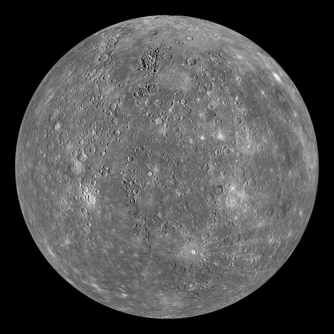
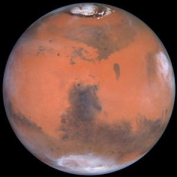
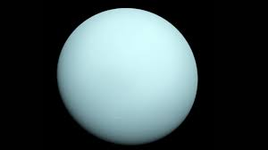
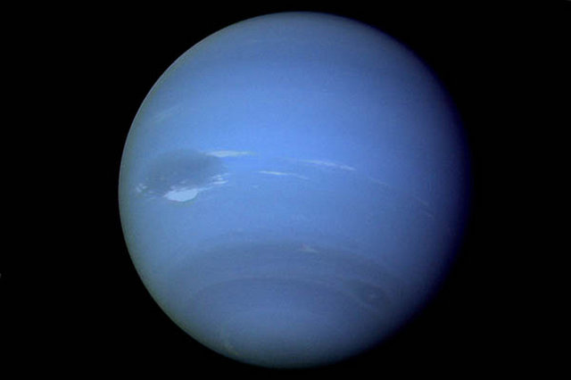

Here we’ll give you some interesting facts about some of the planets in our solar system
Planets are smaller objects orbiting the Sun, and also have their own gravity. The gravitational pull of a planet differs, as well as the number of moons they have. Research has gone into whether or not life exists on other planets, but nothing has been discovered yet. It has also been argued that Pluto is no longer a planet; it has now been declared a dwarf planet. However, this still brings a lot of discussion in the science and space community. There are now a total of 8 planets in the solar system. The order of the planets closest to the Sun is Mercury, Venus, Earth, Mars, Jupiter, Saturn, Uranus and Neptune.
Mercury
Mercury is the closest planet to the Sun. It also doesn’t have any moons. One year on Mercury would be equivalent to 88 days on Earth. Heavy metals and rock are mainly what make up the composition of this planet, making it very dense when compared to its size.
Venus
This planet is named after the Roman goddess of beauty and love. It is also the second brightest object in the night sky, with the first being the moon. Venus also doesn’t have any moons. One day on Venus is equivalent to 117 Earth days.

Earth
Earth is the third planet from the sun, and has one moon. It is also the only planet that hasn’t been named after a Roman or Greek deity.

Mars
This planet was named after the Roman god of war. Mars is also the second smallest planet in our solar system, with an atmosphere that is mostly composed of carbon dioxide. Mars often experiences extreme weather, with some of the largest dust storms in the universe. This is due to its oval shape.
Jupiter
Jupiter is the fifth planet from the sun and is classified as a gas giant, this is due to the fact that its atmosphere is primarily composed of gas. The upper atmosphere however, is divided and made up of zones and cloud belts. Jupiter also takes 11.8 years to fully orbit the Sun.

Saturn
Saturn is also classified as a gas giant, with an atmosphere composed of mainly helium, methane and hydrogen. It also has a massive ring, which was first witnessed by Galileo Galilei. Due to its distance from the sun, it would take Saturn 29.4 Earth years to orbit the Sun.

Uranus
Uranus is described as a “rolling planet” as it is tipped over on its side at a 98 degree angle. This planet also rotates on its axis in the opposite direction to the way Earth turns, as well as taking 84 Earth years to orbit the Sun. Uranus is classified as an ice giant, due to the fact that its upper atmosphere is made up of ammonia, water and methane crystals. Below its upper layer is its ice core.
Neptune
This planet is the furthest from the sun, and has 14 moons. Triton is its most unusual moon, as it ejects dust and nitrogen ice from its surface. Neptune also experiences intense weather like Mars, with massive storms and high speed winds affecting the planets whole upper atmosphere. It also takes 164.8 Earth years for Neptune to orbit the Sun.
